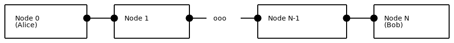
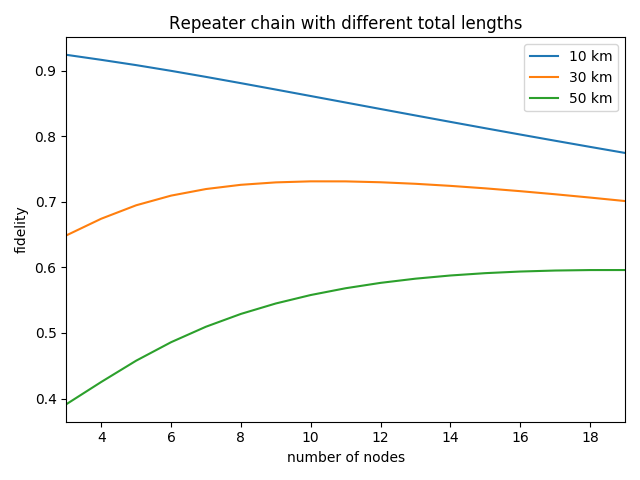

Repeater chain
In this example we show how a simple quantum repeater chain network can be setup and simulated in NetSquid. The module file used in this example can be located as follows:
>>> import netsquid as ns
>>> print("This example module is located at: {}".format(
... ns.examples.repeater_chain.__file__))
This example module is located at: .../netsquid/examples/repeater_chain.py
In the repeater example we simulated a single quantum repeater on a network topology consisting of two nodes connected via a single repeater node (see for instance [Briegel et al.] for more background). To simulate a repeater chain we will extend this network topology to be a line of N nodes as shown below:
{kind=link}
We will refer to the outer nodes as end nodes, and sometimes also as Alice and Bob for convenience, and the in between nodes as the repeater nodes. The lines between the nodes represent both an entangling connection and a classical connection, as introduced in the teleportation example. The repeaters will use a so-called entanglement swapping scheme to entangle the end nodes, which consists of the following steps:
generating entanglement with both of its neighbours,
measuring its two locally stored qubits in the Bell basis,
sending its own measurement outcomes to its right neighbour, and also forwarding on outcomes received from its left neighbour in this way.
Let us create the repeater chain network. We need to create the N nodes, each with a quantum processor, and every pair of nodes in the chain must be linked using an entangling connection and a classical connection. In each entangling connection an entangled qubit generating source is available. A schematic illustration of a repeater and its connections is shown below:

We will re-use the Connection subclasses
EntanglingConnection and ClassicalConnection
created in the teleportation tutorial and
use the following function to create quantum processors for each node:
def create_qprocessor(name):
"""Factory to create a quantum processor for each node in the repeater chain network.
Has two memory positions and the physical instructions necessary for teleportation.
Parameters
----------
name : str
Name of the quantum processor.
Returns
-------
:class:`~netsquid.components.qprocessor.QuantumProcessor`
A quantum processor to specification.
"""
noise_rate = 200
gate_duration = 1
gate_noise_model = DephaseNoiseModel(noise_rate)
mem_noise_model = DepolarNoiseModel(noise_rate)
physical_instructions = [
PhysicalInstruction(INSTR_X, duration=gate_duration,
quantum_noise_model=gate_noise_model),
PhysicalInstruction(INSTR_Z, duration=gate_duration,
quantum_noise_model=gate_noise_model),
PhysicalInstruction(INSTR_MEASURE_BELL, duration=gate_duration),
]
qproc = QuantumProcessor(name, num_positions=2, fallback_to_nonphysical=False,
mem_noise_models=[mem_noise_model] * 2,
phys_instructions=physical_instructions)
return qproc
We create a network component and add the nodes and connections to it. This way we can easily keep track of all our components in the network, which will be useful when collecting data later.
def setup_network(num_nodes, node_distance, source_frequency):
"""Setup repeater chain network.
Parameters
----------
num_nodes : int
Number of nodes in the network, at least 3.
node_distance : float
Distance between nodes [km].
source_frequency : float
Frequency at which the sources create entangled qubits [Hz].
Returns
-------
:class:`~netsquid.nodes.network.Network`
Network component with all nodes and connections as subcomponents.
"""
if num_nodes < 3:
raise ValueError(f"Can't create repeater chain with {num_nodes} nodes.")
network = Network("Repeater_chain_network")
# Create nodes with quantum processors
nodes = []
for i in range(num_nodes):
# Prepend leading zeros to the number
num_zeros = int(np.log10(num_nodes)) + 1
nodes.append(Node(f"Node_{i:0{num_zeros}d}", qmemory=create_qprocessor(f"qproc_{i}")))
network.add_nodes(nodes)
# Create quantum and classical connections:
for i in range(num_nodes - 1):
node, node_right = nodes[i], nodes[i + 1]
# Create quantum connection
qconn = EntanglingConnection(name=f"qconn_{i}-{i+1}", length=node_distance,
source_frequency=source_frequency)
# Add a noise model which depolarizes the qubits exponentially
# depending on the connection length
for channel_name in ['qchannel_C2A', 'qchannel_C2B']:
qconn.subcomponents[channel_name].models['quantum_noise_model'] =\
FibreDepolarizeModel()
port_name, port_r_name = network.add_connection(
node, node_right, connection=qconn, label="quantum")
# Forward qconn directly to quantum memories for right and left inputs:
node.ports[port_name].forward_input(node.qmemory.ports["qin0"]) # R input
node_right.ports[port_r_name].forward_input(
node_right.qmemory.ports["qin1"]) # L input
# Create classical connection
cconn = ClassicalConnection(name=f"cconn_{i}-{i+1}", length=node_distance)
port_name, port_r_name = network.add_connection(
node, node_right, connection=cconn, label="classical",
port_name_node1="ccon_R", port_name_node2="ccon_L")
# Forward cconn to right most node
if "ccon_L" in node.ports:
node.ports["ccon_L"].bind_input_handler(
lambda message, _node=node: _node.ports["ccon_R"].tx_output(message))
return network
We have used a custom noise model in this example, which helps to exaggerate the effectiveness of the repeater chain.
class FibreDepolarizeModel(QuantumErrorModel):
"""Custom non-physical error model used to show the effectiveness
of repeater chains.
The default values are chosen to make a nice figure,
and don't represent any physical system.
Parameters
----------
p_depol_init : float, optional
Probability of depolarization on entering a fibre.
Must be between 0 and 1. Default 0.009
p_depol_length : float, optional
Probability of depolarization per km of fibre.
Must be between 0 and 1. Default 0.025
"""
def __init__(self, p_depol_init=0.009, p_depol_length=0.025):
super().__init__()
self.properties['p_depol_init'] = p_depol_init
self.properties['p_depol_length'] = p_depol_length
self.required_properties = ['length']
def error_operation(self, qubits, delta_time=0, **kwargs):
"""Uses the length property to calculate a depolarization probability,
and applies it to the qubits.
Parameters
----------
qubits : tuple of :obj:`~netsquid.qubits.qubit.Qubit`
Qubits to apply noise to.
delta_time : float, optional
Time qubits have spent on a component [ns]. Not used.
"""
for qubit in qubits:
prob = 1 - (1 - self.properties['p_depol_init']) * np.power(
10, - kwargs['length']**2 * self.properties['p_depol_length'] / 10)
ns.qubits.depolarize(qubit, prob=prob)
The next step is to setup the protocols. To easily manage all the protocols, we add them as subprotocols of one main protocol. In this way, we can start them at the same time, and the main protocol will stop when all subprotocols have finished.
def setup_repeater_protocol(network):
"""Setup repeater protocol on repeater chain network.
Parameters
----------
network : :class:`~netsquid.nodes.network.Network`
Repeater chain network to put protocols on.
Returns
-------
:class:`~netsquid.protocols.protocol.Protocol`
Protocol holding all subprotocols used in the network.
"""
protocol = LocalProtocol(nodes=network.nodes)
# Add SwapProtocol to all repeater nodes. Note: we use unique names,
# since the subprotocols would otherwise overwrite each other in the main protocol.
nodes = [network.nodes[name] for name in sorted(network.nodes.keys())]
for node in nodes[1:-1]:
subprotocol = SwapProtocol(node=node, name=f"Swap_{node.name}")
protocol.add_subprotocol(subprotocol)
# Add CorrectProtocol to Bob
subprotocol = CorrectProtocol(nodes[-1], len(nodes))
protocol.add_subprotocol(subprotocol)
return protocol
The definition of the swapping subprotocol that will run on each repeater node:
class SwapProtocol(NodeProtocol):
"""Perform Swap on a repeater node.
Parameters
----------
node : :class:`~netsquid.nodes.node.Node` or None, optional
Node this protocol runs on.
name : str
Name of this protocol.
"""
def __init__(self, node, name):
super().__init__(node, name)
self._qmem_input_port_l = self.node.qmemory.ports["qin1"]
self._qmem_input_port_r = self.node.qmemory.ports["qin0"]
self._program = QuantumProgram(num_qubits=2)
q1, q2 = self._program.get_qubit_indices(num_qubits=2)
self._program.apply(INSTR_MEASURE_BELL, [q1, q2], output_key="m", inplace=False)
def run(self):
while True:
yield (self.await_port_input(self._qmem_input_port_l) &
self.await_port_input(self._qmem_input_port_r))
# Perform Bell measurement
yield self.node.qmemory.execute_program(self._program, qubit_mapping=[1, 0])
m, = self._program.output["m"]
# Send result to right node on end
self.node.ports["ccon_R"].tx_output(Message(m))
The definition of the correction subprotocol responsible for applying the classical corrections at Bob:
class CorrectProtocol(NodeProtocol):
"""Perform corrections for a swap on an end-node.
Parameters
----------
node : :class:`~netsquid.nodes.node.Node` or None, optional
Node this protocol runs on.
num_nodes : int
Number of nodes in the repeater chain network.
"""
def __init__(self, node, num_nodes):
super().__init__(node, "CorrectProtocol")
self.num_nodes = num_nodes
self._x_corr = 0
self._z_corr = 0
self._program = SwapCorrectProgram()
self._counter = 0
def run(self):
while True:
yield self.await_port_input(self.node.ports["ccon_L"])
message = self.node.ports["ccon_L"].rx_input()
if message is None or len(message.items) != 1:
continue
m = message.items[0]
if m == ks.BellIndex.B01 or m == ks.BellIndex.B11:
self._x_corr += 1
if m == ks.BellIndex.B10 or m == ks.BellIndex.B11:
self._z_corr += 1
self._counter += 1
if self._counter == self.num_nodes - 2:
if self._x_corr or self._z_corr:
self._program.set_corrections(self._x_corr, self._z_corr)
yield self.node.qmemory.execute_program(self._program, qubit_mapping=[1])
self.send_signal(Signals.SUCCESS)
self._x_corr = 0
self._z_corr = 0
self._counter = 0
Note that for the corrections we only need to apply each of the \(X\) or \(Z\) operators maximally once. This is due to the anti-commutativity and self-inverse of these Pauli matrices, i.e. \(ZX = -XZ\) and \(XX=ZZ=I\), which allows us to cancel repeated occurrences up to a global phase (-1). The program that executes the correction on Bob’s quantum processor is:
class SwapCorrectProgram(QuantumProgram):
"""Quantum processor program that applies all swap corrections."""
default_num_qubits = 1
def set_corrections(self, x_corr, z_corr):
self.x_corr = x_corr % 2
self.z_corr = z_corr % 2
def program(self):
q1, = self.get_qubit_indices(1)
if self.x_corr == 1:
self.apply(INSTR_X, q1)
if self.z_corr == 1:
self.apply(INSTR_Z, q1)
yield self.run()
With our network and protocols ready, we can add a data collector to define when and which data we want to collect. We can wait for the signal sent by the CorrectProtocol when it finishes, and if it has, compute the fidelity of the qubits at Alice and Bob with respect to the expected Bell state. Using our network and main protocol we can easily find Alice and the CorrectionProtocol as subcomponents.
def setup_datacollector(network, protocol):
"""Setup the datacollector to calculate the fidelity
when the CorrectionProtocol has finished.
Parameters
----------
network : :class:`~netsquid.nodes.network.Network`
Repeater chain network to put protocols on.
protocol : :class:`~netsquid.protocols.protocol.Protocol`
Protocol holding all subprotocols used in the network.
Returns
-------
:class:`~netsquid.util.datacollector.DataCollector`
Datacollector recording fidelity data.
"""
# Ensure nodes are ordered in the chain:
nodes = [network.nodes[name] for name in sorted(network.nodes.keys())]
def calc_fidelity(evexpr):
qubit_a, = nodes[0].qmemory.peek([0])
qubit_b, = nodes[-1].qmemory.peek([1])
fidelity = ns.qubits.fidelity([qubit_a, qubit_b], ks.b00, squared=True)
return {"fidelity": fidelity}
dc = DataCollector(calc_fidelity, include_entity_name=False)
dc.collect_on(pydynaa.EventExpression(source=protocol.subprotocols['CorrectProtocol'],
event_type=Signals.SUCCESS.value))
return dc
We want to run the experiment for multiple numbers of nodes and distances. Let us first define a function to run a single simulation:
def run_simulation(num_nodes=4, node_distance=20, num_iters=100):
"""Run the simulation experiment and return the collected data.
Parameters
----------
num_nodes : int, optional
Number nodes in the repeater chain network. At least 3. Default 4.
node_distance : float, optional
Distance between nodes, larger than 0. Default 20 [km].
num_iters : int, optional
Number of simulation runs. Default 100.
Returns
-------
:class:`pandas.DataFrame`
Dataframe with recorded fidelity data.
"""
ns.sim_reset()
est_runtime = (0.5 + num_nodes - 1) * node_distance * 5e3
network = setup_network(num_nodes, node_distance=node_distance,
source_frequency=1e9 / est_runtime)
protocol = setup_repeater_protocol(network)
dc = setup_datacollector(network, protocol)
protocol.start()
ns.sim_run(est_runtime * num_iters)
return dc.dataframe
Finally we will run multiple simulations and plot them in a figure.
def create_plot(num_iters=2000):
"""Run the simulation for multiple nodes and distances and show them in a figure.
Parameters
----------
num_iters : int, optional
Number of iterations per simulation configuration.
At least 1. Default 2000.
"""
from matplotlib import pyplot as plt
fig, ax = plt.subplots()
for distance in [10, 30, 50]:
data = pandas.DataFrame()
for num_node in range(3, 20):
data[num_node] = run_simulation(num_nodes=num_node,
node_distance=distance / num_node,
num_iters=num_iters)['fidelity']
# For errorbars we use the standard error of the mean (sem)
data = data.agg(['mean', 'sem']).T.rename(columns={'mean': 'fidelity'})
data.plot(y='fidelity', yerr='sem', label=f"{distance} km", ax=ax)
plt.xlabel("number of nodes")
plt.ylabel("fidelity")
plt.title("Repeater chain with different total lengths")
plt.show()
Using the ket vector formalism produces the following figure:

Because the quantum states don’t have an opportunity to grow very large in our simulation, it is also possible for this simple example to improve on our results using the density matrix formalism. Instead of running the simulation for 2000 iterations, it is now sufficient to run it for only a few. As we see in the figure below, the error-bars now become negligible:
{kind=link}